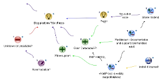
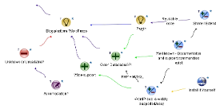
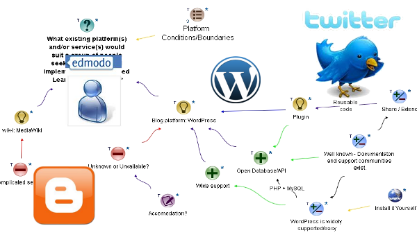

jQuery.jSyncWithMedia
Simple media synchronizing
With jQuery.jSyncWithMedia you can record a narration and
synchronize a slide show to your speech.
For automated bullets or subtitles,
create an unordered list and set the attribute
data-jswm-on="StartTime"
data-jswm-off="EndTime" in seconds,
to one decimal place, e.g., "3.5".
For any other element add these "data-"
attributes and the class
class="jswm-syncItem".
Special settings:
data-jswm-on="0" shows at load time.
data-jswm-on="-1" data-jswm-off="-1" shows after everything has played.
- jQuery/CSS/HTML5, simple media synchronization on a Web page
-
record, then synchronize text and images
-
...in a presentation-like format
-
...or as subtitles / closed captioning
-
To get started...
-
<div>
audio>
<source>One .ogg, one mp3</source>
</audio>
<ul>
<li>Point</li>
</ul>
</div>
-
<img class="jswm-syncItem" src="myImage.png" />
-
data-namespace-anything="myData"
-
class="jswm-syncItem"
data-namespace-anything="myData"
data-namespace-anything="myData"
-
This is a research project
and... -
I'm creating an artifact...
-
I've been a middle school music, math, and computers teacher, and a "webmaster" for a faculty of education and I like jQuery...
If I can do this...
I bet you can too!
What I knew already
The tools I used
Where I looked for help
What I wish I could do better...
And how all this might be connected


Documenting the experience of building this tool
to document the experience of building this tool...
Idea Mapping
Communities of Practice
Personal Learning Networks
